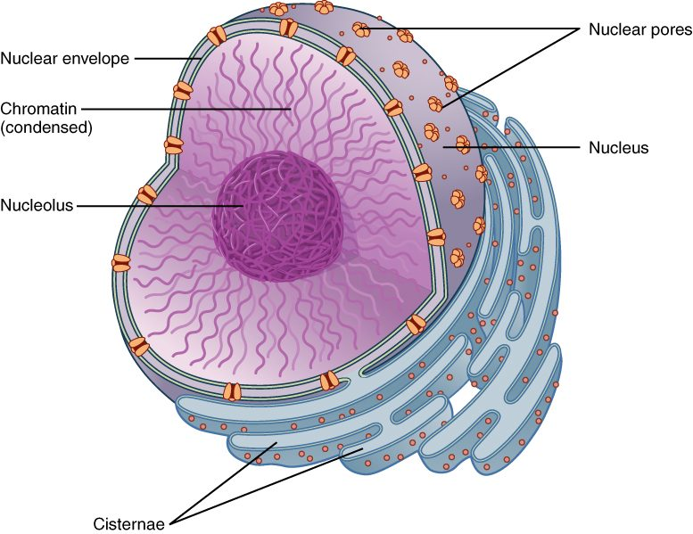

The nucleus, DNA and genes
Your DNA sits in the nucleus, behind a double nuclear envelope with nuclear pores; the nucleolus assembles ribosome halves.
Part 1 · Clinical hook
Why this matters
Ms. Reyes, 34, has blood drawn for a genetic test. Almost every cell in her tube is a red blood cell, yet the lab gets no DNA from them. The DNA comes from the few white blood cells, because mature red blood cells have no nucleus. Where DNA lives, how it is built and how it is copied all follow from its structure.
Part 2 · Foundations
What this builds on
Part 3 · Prerequisite check
Quick check before you start
1. What are the monomers of a nucleic acid?
- Amino acids
- Nucleotides
- Monosaccharides
- Fatty acids
Show the answer
Nucleic acids are polymers of nucleotides. Each nucleotide has a phosphate, a five-carbon sugar and a nitrogenous base.
- Amino acids:
- Correct: Nucleotides:
- Monosaccharides:
- Fatty acids:
2. What does an enzyme do to a chemical reaction?
- It lowers the activation energy, which speeds the reaction
- It supplies the energy the reaction releases
- It becomes one of the products
- It raises the activation energy
Show the answer
An enzyme lowers the activation energy, so the reaction runs faster. It comes out of the reaction unchanged and does not change how much energy the reaction releases.
- Correct: It lowers the activation energy, which speeds the reaction:
- It supplies the energy the reaction releases:
- It becomes one of the products:
- It raises the activation energy:
3. Which organelle is a network of membranes with ribosomes on its outer surface?
- Golgi apparatus
- Smooth ER
- Rough ER
- Lysosome
Show the answer
Rough ER is studded with ribosomes, which gives it its rough look. Its membranes connect to the outer layer of the nuclear envelope.
- Golgi apparatus:
- Smooth ER:
- Correct: Rough ER:
- Lysosome:
Part 4 · Anatomy panel
Anatomy

With labels hidden, select a box to reveal its label.
Part 5 · Causal chain
How it works, step by step
- Before a cell divides, helicase moves along each DNA double helix and breaks the hydrogen bonds between paired bases.The two strands separate, and the bases of each strand are exposed.
- The exposed bases act as templates.Free nucleotides pair with them by the base-pairing rule: A with T, G with C.
- DNA polymerase links the paired nucleotides with covalent bonds and proofreads each one.A new complementary strand grows along each old strand. After proofreading, and repair by other enzymes, about one error per billion bases is left.
- Each old strand is now paired with a new strand.Two identical double helices exist, each with one old and one new strand (semiconservative replication).
- The two copies of each chromosome stay joined at the centromere.Each chromosome now consists of two identical sister chromatids, ready to be shared between two new cells.
Part 6 · Key ideas
Key ideas
- A gene (gen- = to produce) is a segment of DNA whose base sequence codes for a working product; for most genes that product is a protein. Your genome (gene + -ome = the whole set) is all the DNA in one set of your chromosomes, and almost every cell in your body carries the same genome.
- The phosphate groups along DNA's backbone carry a negative charge, and histones are positively charged proteins, so opposite charges pull the DNA tightly around them. About 147 base pairs wrap a core of eight histones to form a nucleosome (nucleo- = nucleus, -some = body), and strings of nucleosomes coil and fold into chromatin.
Part 7 · Core concept
Core concepts
Part 8 · Misconception
A common mistake
The wrong idea: Chromosomes are always X-shaped, and each X is two chromosomes.
What actually happens: Most of the time your DNA is loose chromatin, and each chromosome is a single long DNA molecule. The X shape appears only after the DNA has been copied and packed tightly, when a cell is about to divide. Even then the X is one chromosome made of two sister chromatids, so a cell holding 46 X shapes has 46 chromosomes and 92 chromatids.
Part 9 · Retrieval check
Check yourself
Anything you miss goes into your review queue.
1. In a DNA double helix, which base pairs with guanine?
- Adenine
- Thymine
- Cytosine
- Another guanine
Show the answer
Guanine pairs with cytosine. A purine (guanine) pairs with a pyrimidine (cytosine), and the two line up to form three hydrogen bonds.
- Adenine: Adenine is a purine, like guanine. Two purines together would make a rung too wide for the helix, and they cannot line up hydrogen bonds. Adenine pairs with thymine.
- Thymine: Thymine is a pyrimidine, so the width would fit, but its hydrogen-bonding groups do not line up well with guanine's. Thymine pairs with adenine.
- Correct: Cytosine: Correct. Guanine and cytosine form three hydrogen bonds and make a rung of standard width.
- Another guanine: Two guanines are two purines: too wide for the helix, and their bonding groups do not match.
2. A sample of double-stranded human DNA is 22% thymine. What percentage of its bases is cytosine?
- 22%
- 56%
- 28%
- 44%
Show the answer
Thymine pairs with adenine, so A = T = 22%, and A + T = 44%. That leaves 56% for G + C. Guanine pairs with cytosine, so G = C, and C = 56% ÷ 2 = 28%.
- 22%: 22% is the thymine value, and also the adenine value, since A pairs with T. Cytosine pairs with guanine, not thymine.
- 56%: 56% is guanine and cytosine together. Split it in half, because every guanine has one cytosine partner.
- Correct: 28%: Correct. A + T = 44%, G + C = 56%, and cytosine is half of that.
- 44%: 44% is adenine plus thymine together, not cytosine.
3. One of your body cells has just finished copying all of its DNA and has not yet divided. How many chromosomes and how many chromatids does it contain?
- 92 chromosomes and 92 chromatids
- 46 chromosomes and 46 chromatids
- 23 chromosomes and 46 chromatids
- 46 chromosomes and 92 chromatids
Show the answer
Copying doubles the DNA but not the chromosome count. Each of the 46 chromosomes now consists of two sister chromatids joined at the centromere, so there are 46 chromosomes and 92 chromatids.
- 92 chromosomes and 92 chromatids: This counts each chromatid as a separate chromosome. Sister chromatids stay joined, and together they are still one chromosome.
- 46 chromosomes and 46 chromatids: This is the cell before copying, when each chromosome is a single DNA molecule. Copying adds a second chromatid to each.
- 23 chromosomes and 46 chromatids: 23 is the count in an egg or sperm cell, which carries one set. Your body cells carry two sets, 46 chromosomes.
- Correct: 46 chromosomes and 92 chromatids: Correct. 46 chromosomes, each made of two sister chromatids.
4. A student lists the steps of DNA replication. Which step contains the error?
- DNA polymerase separates the two strands by breaking the hydrogen bonds between paired bases.
- Free nucleotides pair with the exposed bases: A with T and G with C.
- DNA polymerase links the new nucleotides into a strand and removes most wrongly placed bases.
- Each new double helix is made of one old strand and one new strand.
Show the answer
Helicase, not DNA polymerase, separates the strands by breaking the hydrogen bonds between paired bases. DNA polymerase then builds new strands on the exposed templates.
- Correct: DNA polymerase separates the two strands by breaking the hydrogen bonds between paired bases.: This is the error. Helicase separates the strands; DNA polymerase builds and proofreads the new strands.
- Free nucleotides pair with the exposed bases: A with T and G with C.: This step is right. Free nucleotides pair with the template by the base-pairing rule.
- DNA polymerase links the new nucleotides into a strand and removes most wrongly placed bases.: This step is right. DNA polymerase joins the nucleotides with covalent bonds and proofreads as it goes.
- Each new double helix is made of one old strand and one new strand.: This step is right. Replication is semiconservative: each copy keeps one old strand, which served as its template.
5. Histone proteins are rich in amino acids that carry a positive charge. Why does DNA wrap tightly around them?
- DNA's bases form hydrogen bonds with the histones
- The negative phosphate backbone is drawn to the positive histones
- DNA's sugars are hydrophobic and hide inside the histone core
- Histones cut the DNA into short pieces that fit each core
Show the answer
Each phosphate group in DNA's backbone carries a negative charge. Opposite charges attract, so the negative backbone clings to the positive histone surface.
- DNA's bases form hydrogen bonds with the histones: The bases are tucked into the middle of the helix, paired with each other. The histones contact the outside of the helix, which is the backbone.
- Correct: The negative phosphate backbone is drawn to the positive histones: Correct. The attraction between opposite charges holds DNA on the histone core.
- DNA's sugars are hydrophobic and hide inside the histone core: Deoxyribose is a polar sugar, and the backbone faces the watery nucleus. The binding comes from charge, not from avoiding water.
- Histones cut the DNA into short pieces that fit each core: Histones package DNA without cutting it. Each chromosome stays one continuous DNA molecule.
6. Compare a liver cell and a skin cell from the same person. Which statement about their DNA is accurate?
- The liver cell carries the genes for liver work and has lost the rest
- They carry the same genome, but each uses a different set of genes
- The skin cell has fewer chromosomes than the liver cell
- Each carries a different sequence of bases in the same genes
Show the answer
Almost every cell with a nucleus carries the same genome, copied from the same first cell. Cells differ because each uses a different subset of genes.
- The liver cell carries the genes for liver work and has lost the rest: Cells do not discard the genes they do not use. A liver cell still carries the genes for skin proteins.
- Correct: They carry the same genome, but each uses a different set of genes: Correct. Same DNA, different genes in use.
- The skin cell has fewer chromosomes than the liver cell: Both have 46 chromosomes. Chromosome number does not differ between body cell types.
- Each carries a different sequence of bases in the same genes: Every copy of your DNA comes from the same original through accurate replication, so the sequences are the same apart from rare copying errors.
Part 10 · Summary
Summary
Your DNA sits in the nucleus, behind a double nuclear envelope with nuclear pores; the nucleolus assembles ribosome halves. DNA is two antiparallel strands of nucleotides twisted into a double helix, paired A with T and G with C by hydrogen bonds. It winds around positively charged histones into nucleosomes and chromatin, and packs further into chromosomes: 46 in most body cells, 22 pairs of autosomes plus the sex chromosomes. A gene is a segment of DNA that codes for a working product, and your genome holds about 20,000 protein-coding genes. Before a cell divides, helicase separates the strands and DNA polymerase builds a new partner for each, giving two identical sister chromatids joined at a centromere.
Part 11 · Up next